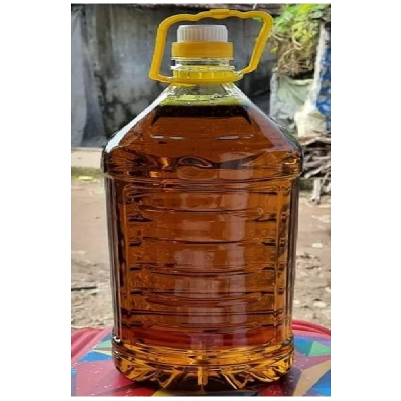

Mustard oil is a widely used cooking oil in Bangladesh, known for its distinct flavor and various health benefits. It is derived from the seeds of the mustard plant (Brassica juncea) through a process of pressing or grinding.
In Bangladesh, mustard oil holds significant cultural and culinary importance. It has been used for centuries in traditional Bangladeshi cooking, adding a unique and pungent flavor to dishes. The oil is commonly used in preparing curries, stir-fries, pickles, and other traditional Bengali recipes.
One of the notable characteristics of mustard oil is its strong aroma and spicy taste. It has a sharp and robust flavor profile, often described as nutty, peppery, and slightly bitter. This distinct flavor adds depth and complexity to the dishes it is used in, making it a preferred choice for many local cuisines.

Apart from its culinary uses, mustard oil is also valued for its potential health benefits. It is rich in monounsaturated and polyunsaturated fats, particularly omega-3 fatty acids. These fatty acids are known to support heart health, reduce inflammation, and promote overall well-being. Mustard oil also contains essential vitamins and minerals such as vitamin E, vitamin B complex, iron, and calcium.
In addition to its nutritional composition, mustard oil has antimicrobial and preservative properties. Due to these characteristics, it is sometimes used as a natural remedy for external skin and hair issues. Some people in Bangladesh also use mustard oil for oil pulling, a traditional oral hygiene practice believed to improve dental health.

It's important to note that while mustard oil is widely consumed and appreciated in Bangladesh, its usage and availability may vary in different parts of the world due to regulations and preferences. In some regions, it may be used more commonly for external purposes rather than for cooking.
However, it's worth mentioning that mustard oil has a relatively low smoke point compared to other cooking oils, which means it may not be suitable for deep-frying or high-heat cooking methods. It is often recommended to use mustard oil for medium-heat cooking or as a finishing oil for flavoring.

In conclusion, mustard oil is an integral part of Bangladeshi cuisine and culture. Its unique flavor, potential health benefits, and versatility in cooking make it a staple in many households and a defining ingredient in traditional Bengali dishes.